MIL Debug Patches
outputs/mil_dino_shared_seasonal_20m_rgb_green_mean_green_mean_cuda/pca_val_best/debug_largest_offsets/images
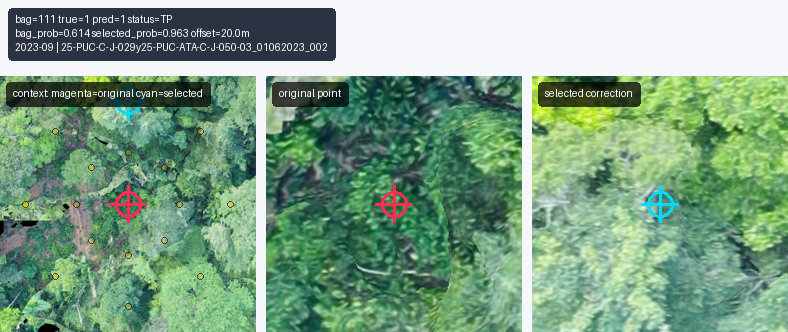
bag 111 | TP | bag 0.614 | inst 0.963 | 20.0m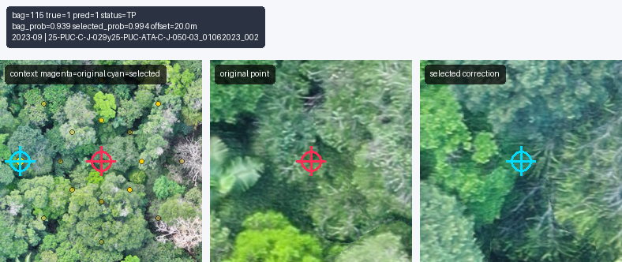
bag 115 | TP | bag 0.939 | inst 0.994 | 20.0m bag 106 | TP | bag 0.897 | inst 0.993 | 20.0m
bag 106 | TP | bag 0.897 | inst 0.993 | 20.0m bag 110 | FN | bag 0.011 | inst 0.021 | 20.0m
bag 110 | FN | bag 0.011 | inst 0.021 | 20.0m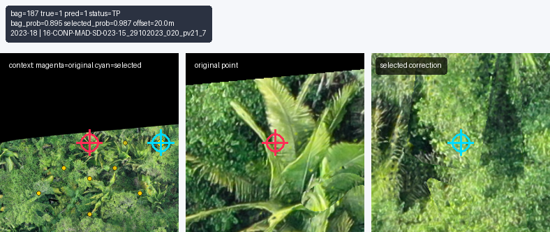
bag 187 | TP | bag 0.895 | inst 0.987 | 20.0m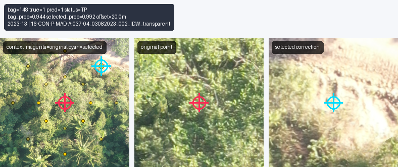
bag 148 | TP | bag 0.944 | inst 0.992 | 20.0m bag 149 | TP | bag 0.818 | inst 0.978 | 20.0m
bag 149 | TP | bag 0.818 | inst 0.978 | 20.0m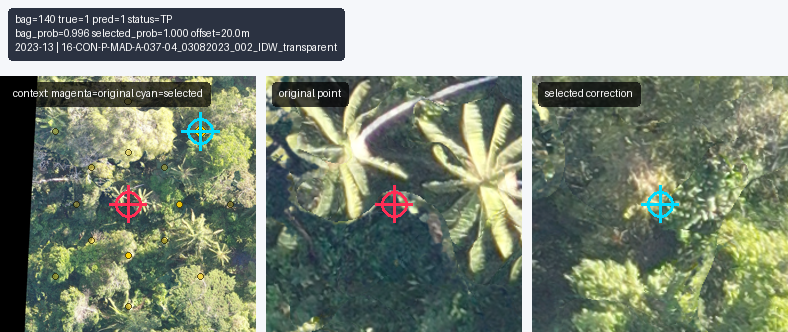
bag 140 | TP | bag 0.996 | inst 1.000 | 20.0m bag 139 | TP | bag 0.566 | inst 0.953 | 20.0m
bag 139 | TP | bag 0.566 | inst 0.953 | 20.0m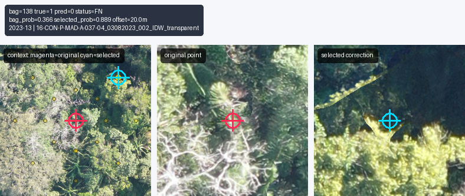
bag 138 | FN | bag 0.366 | inst 0.889 | 20.0m bag 142 | TP | bag 0.944 | inst 0.996 | 20.0m
bag 142 | TP | bag 0.944 | inst 0.996 | 20.0m bag 155 | TP | bag 0.985 | inst 0.999 | 20.0m
bag 155 | TP | bag 0.985 | inst 0.999 | 20.0m bag 127 | TP | bag 0.999 | inst 1.000 | 20.0m
bag 127 | TP | bag 0.999 | inst 1.000 | 20.0m bag 126 | TP | bag 0.982 | inst 0.999 | 20.0m
bag 126 | TP | bag 0.982 | inst 0.999 | 20.0m bag 125 | TP | bag 0.958 | inst 0.997 | 20.0m
bag 125 | TP | bag 0.958 | inst 0.997 | 20.0m bag 128 | TP | bag 0.722 | inst 0.955 | 20.0m
bag 128 | TP | bag 0.722 | inst 0.955 | 20.0m bag 129 | TP | bag 0.811 | inst 0.950 | 20.0m
bag 129 | TP | bag 0.811 | inst 0.950 | 20.0m bag 190 | TP | bag 0.987 | inst 0.999 | 20.0m
bag 190 | TP | bag 0.987 | inst 0.999 | 20.0m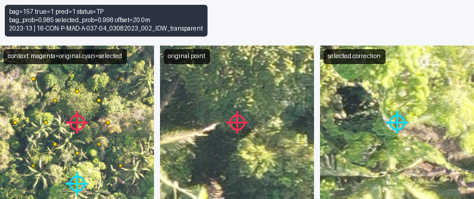
bag 157 | TP | bag 0.985 | inst 0.998 | 20.0m bag 145 | TP | bag 0.845 | inst 0.988 | 20.0m
bag 145 | TP | bag 0.845 | inst 0.988 | 20.0m bag 141 | FN | bag 0.119 | inst 0.310 | 20.0m
bag 141 | FN | bag 0.119 | inst 0.310 | 20.0m bag 156 | TP | bag 0.990 | inst 0.999 | 20.0m
bag 156 | TP | bag 0.990 | inst 0.999 | 20.0m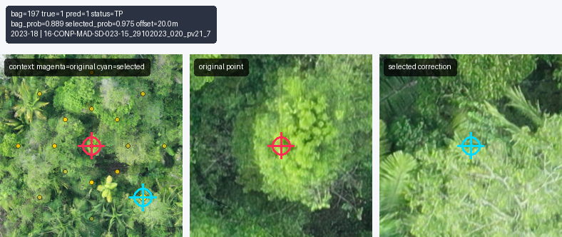
bag 197 | TP | bag 0.889 | inst 0.975 | 20.0m bag 120 | TP | bag 0.945 | inst 0.993 | 20.0m
bag 120 | TP | bag 0.945 | inst 0.993 | 20.0m bag 137 | TP | bag 0.898 | inst 0.984 | 20.0m
bag 137 | TP | bag 0.898 | inst 0.984 | 20.0m bag 105 | TP | bag 0.942 | inst 0.996 | 20.0m
bag 105 | TP | bag 0.942 | inst 0.996 | 20.0m bag 116 | FN | bag 0.390 | inst 0.845 | 20.0m
bag 116 | FN | bag 0.390 | inst 0.845 | 20.0m bag 108 | FN | bag 0.287 | inst 0.866 | 20.0m
bag 108 | FN | bag 0.287 | inst 0.866 | 20.0m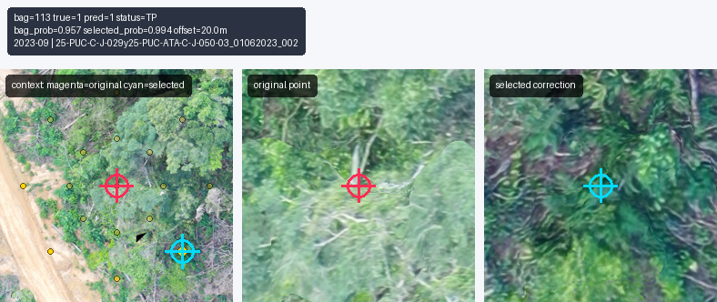
bag 113 | TP | bag 0.957 | inst 0.994 | 20.0m bag 107 | FN | bag 0.054 | inst 0.287 | 20.0m
bag 107 | FN | bag 0.054 | inst 0.287 | 20.0m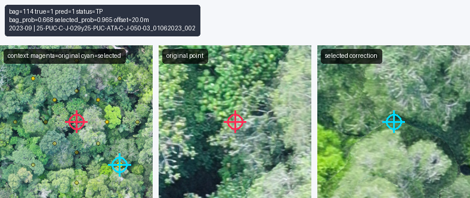
bag 114 | TP | bag 0.668 | inst 0.965 | 20.0m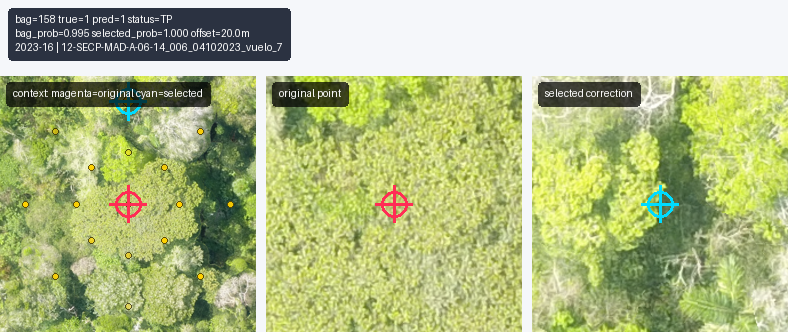
bag 158 | TP | bag 0.995 | inst 1.000 | 20.0m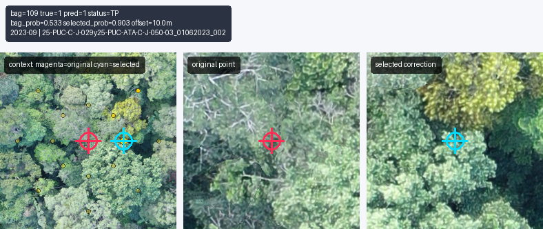
bag 109 | TP | bag 0.533 | inst 0.903 | 10.0m bag 188 | TP | bag 0.876 | inst 0.986 | 10.0m
bag 188 | TP | bag 0.876 | inst 0.986 | 10.0m bag 198 | TP | bag 0.944 | inst 0.994 | 10.0m
bag 198 | TP | bag 0.944 | inst 0.994 | 10.0m bag 147 | TP | bag 0.870 | inst 0.986 | 10.0m
bag 147 | TP | bag 0.870 | inst 0.986 | 10.0m bag 151 | TP | bag 0.779 | inst 0.934 | 10.0m
bag 151 | TP | bag 0.779 | inst 0.934 | 10.0m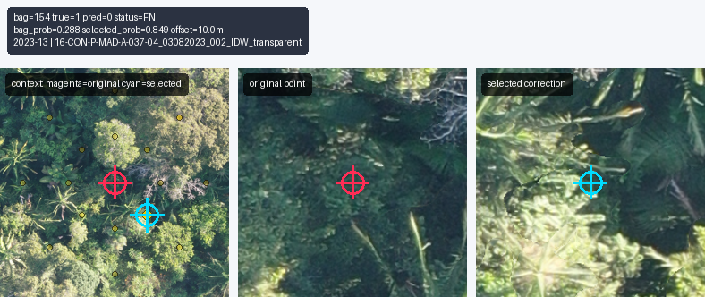
bag 154 | FN | bag 0.288 | inst 0.849 | 10.0m bag 196 | TP | bag 0.965 | inst 0.992 | 10.0m
bag 196 | TP | bag 0.965 | inst 0.992 | 10.0m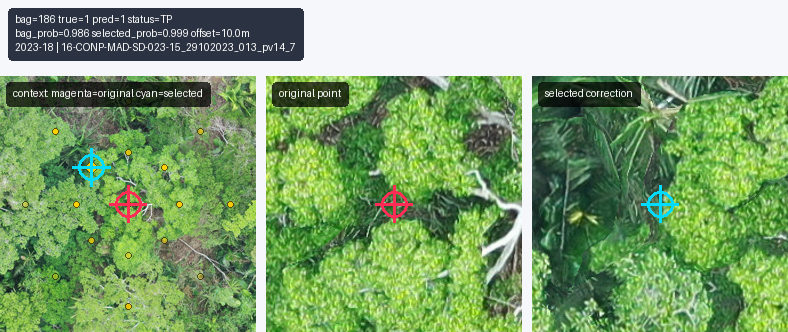
bag 186 | TP | bag 0.986 | inst 0.999 | 10.0m bag 124 | TP | bag 0.672 | inst 0.949 | 10.0m
bag 124 | TP | bag 0.672 | inst 0.949 | 10.0m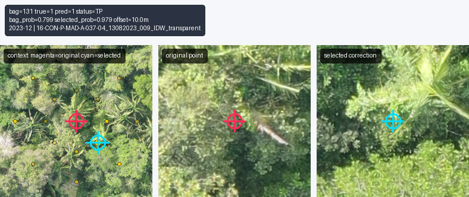
bag 131 | TP | bag 0.799 | inst 0.979 | 10.0m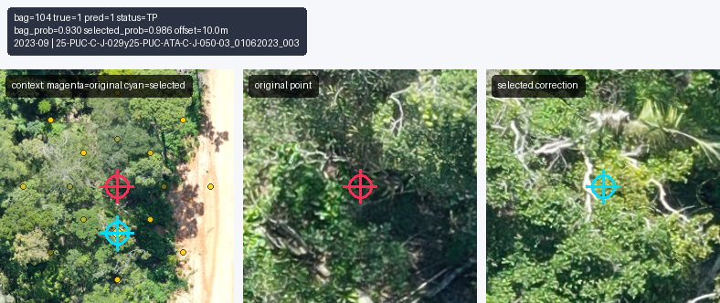
bag 104 | TP | bag 0.930 | inst 0.986 | 10.0m bag 195 | TP | bag 0.890 | inst 0.979 | 10.0m
bag 195 | TP | bag 0.890 | inst 0.979 | 10.0m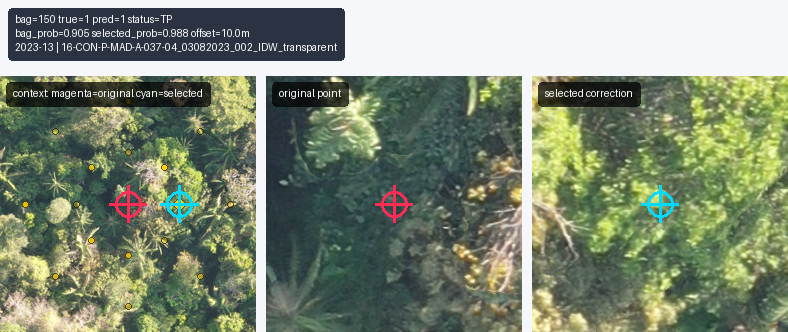
bag 150 | TP | bag 0.905 | inst 0.988 | 10.0m bag 152 | TP | bag 0.988 | inst 0.999 | 10.0m
bag 152 | TP | bag 0.988 | inst 0.999 | 10.0m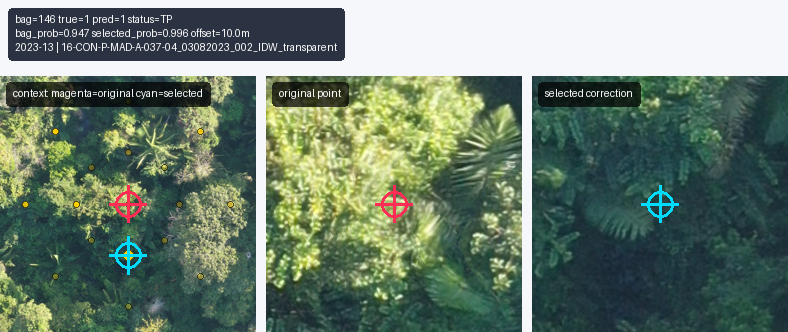
bag 146 | TP | bag 0.947 | inst 0.996 | 10.0m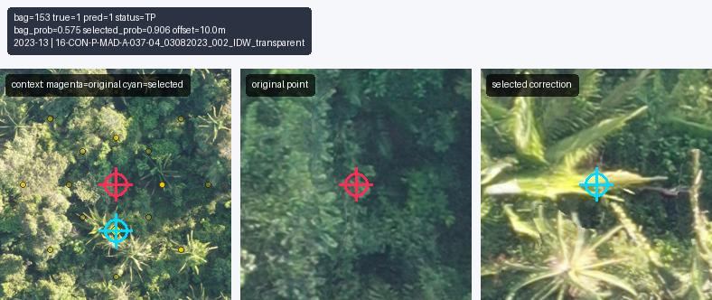
bag 153 | TP | bag 0.575 | inst 0.906 | 10.0m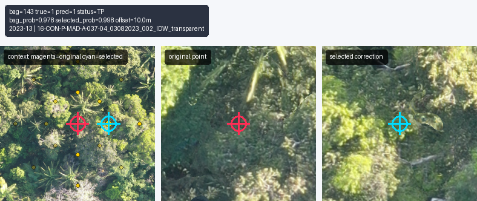
bag 143 | TP | bag 0.978 | inst 0.998 | 10.0m bag 160 | TP | bag 0.952 | inst 0.992 | 10.0m
bag 160 | TP | bag 0.952 | inst 0.992 | 10.0m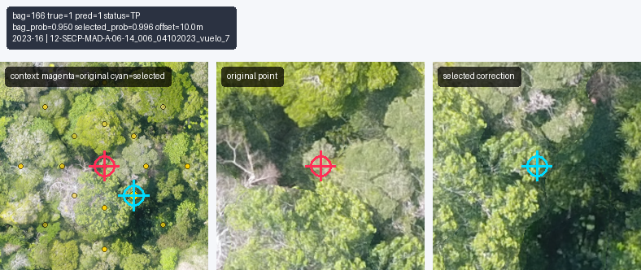
bag 166 | TP | bag 0.950 | inst 0.996 | 10.0m bag 112 | FN | bag 0.366 | inst 0.904 | 10.0m
bag 112 | FN | bag 0.366 | inst 0.904 | 10.0m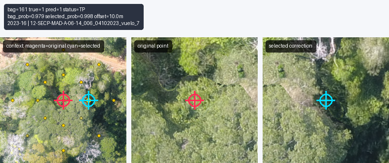
bag 161 | TP | bag 0.979 | inst 0.998 | 10.0m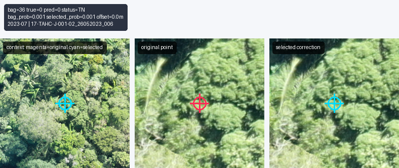
bag 36 | TN | bag 0.001 | inst 0.001 | 0.0m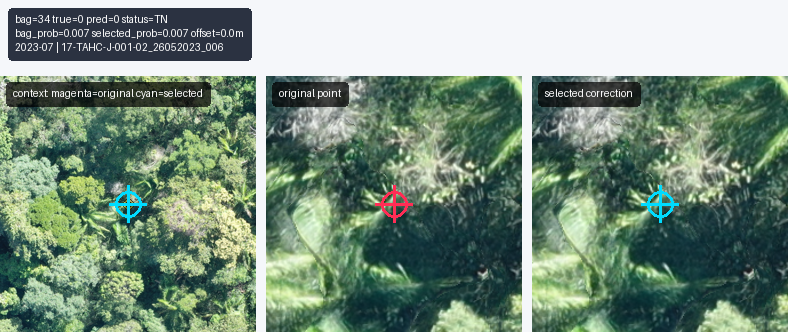
bag 34 | TN | bag 0.007 | inst 0.007 | 0.0m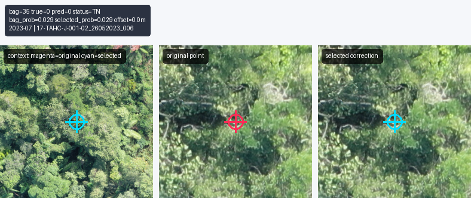
bag 35 | TN | bag 0.029 | inst 0.029 | 0.0m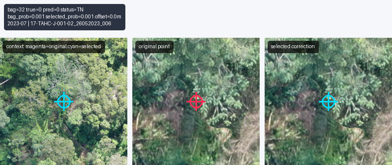
bag 32 | TN | bag 0.001 | inst 0.001 | 0.0m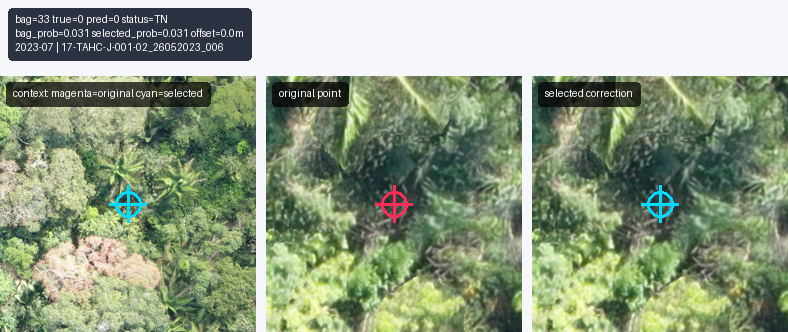
bag 33 | TN | bag 0.031 | inst 0.031 | 0.0m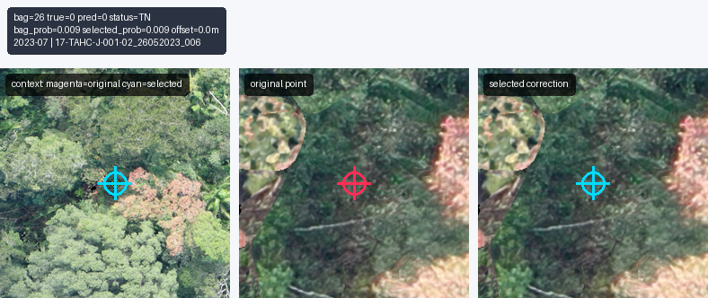
bag 26 | TN | bag 0.009 | inst 0.009 | 0.0m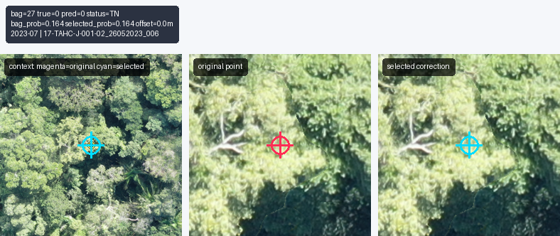
bag 27 | TN | bag 0.164 | inst 0.164 | 0.0m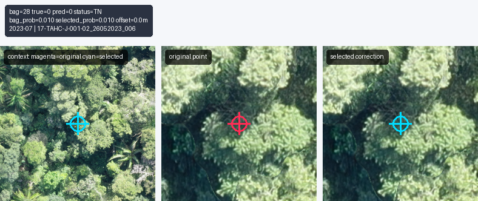
bag 28 | TN | bag 0.010 | inst 0.010 | 0.0m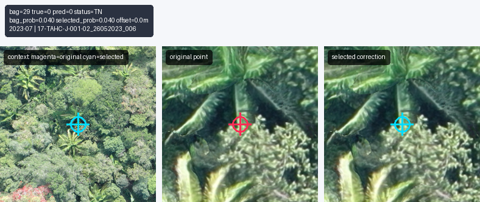
bag 29 | TN | bag 0.040 | inst 0.040 | 0.0m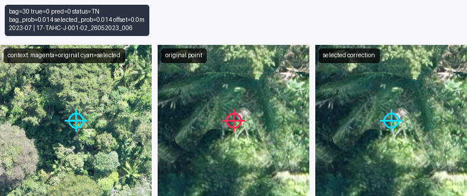
bag 30 | TN | bag 0.014 | inst 0.014 | 0.0m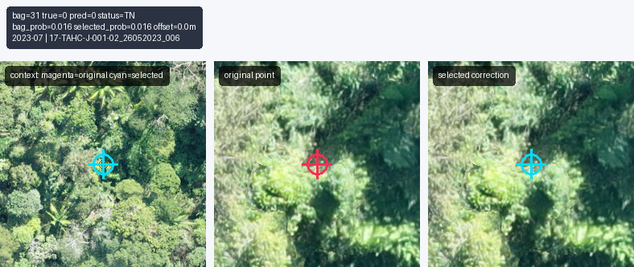
bag 31 | TN | bag 0.016 | inst 0.016 | 0.0m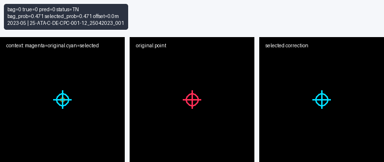
bag 0 | TN | bag 0.471 | inst 0.471 | 0.0m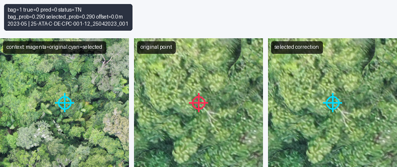
bag 1 | TN | bag 0.290 | inst 0.290 | 0.0m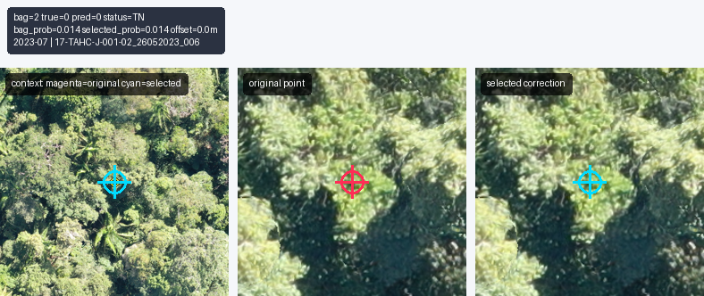
bag 2 | TN | bag 0.014 | inst 0.014 | 0.0m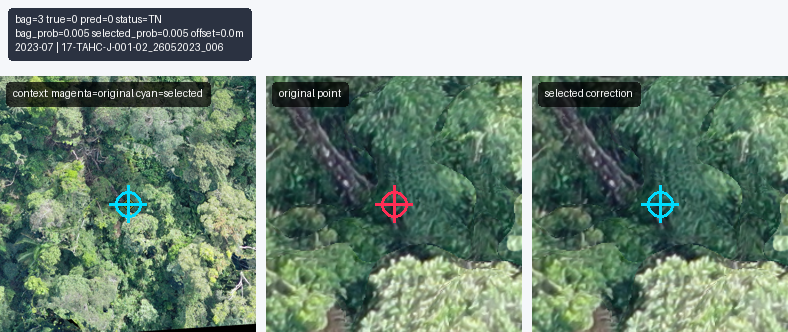
bag 3 | TN | bag 0.005 | inst 0.005 | 0.0m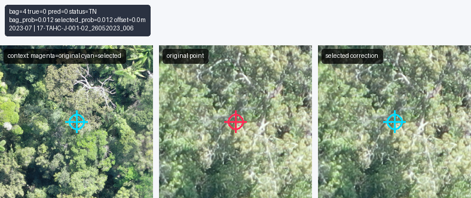
bag 4 | TN | bag 0.012 | inst 0.012 | 0.0m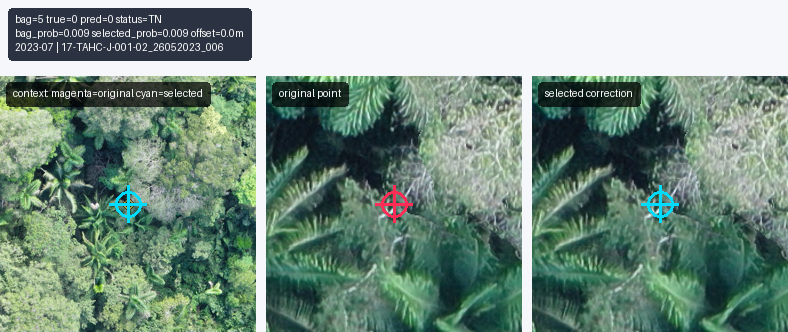
bag 5 | TN | bag 0.009 | inst 0.009 | 0.0m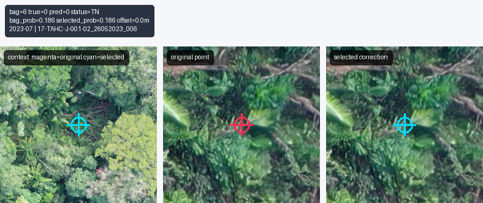
bag 6 | TN | bag 0.186 | inst 0.186 | 0.0m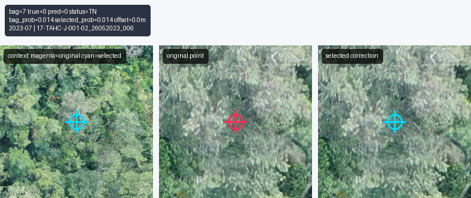
bag 7 | TN | bag 0.014 | inst 0.014 | 0.0m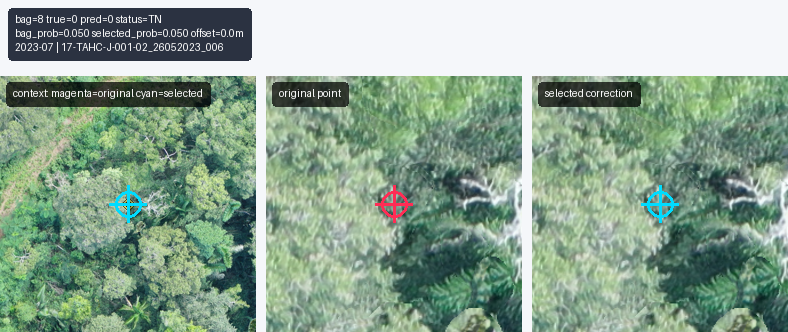
bag 8 | TN | bag 0.050 | inst 0.050 | 0.0m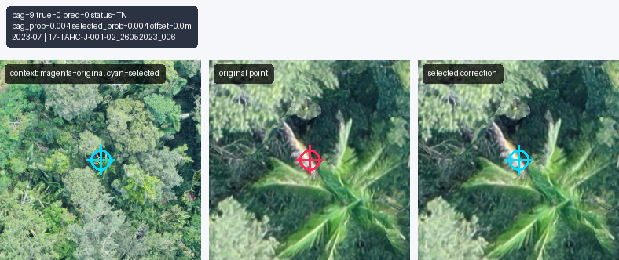
bag 9 | TN | bag 0.004 | inst 0.004 | 0.0m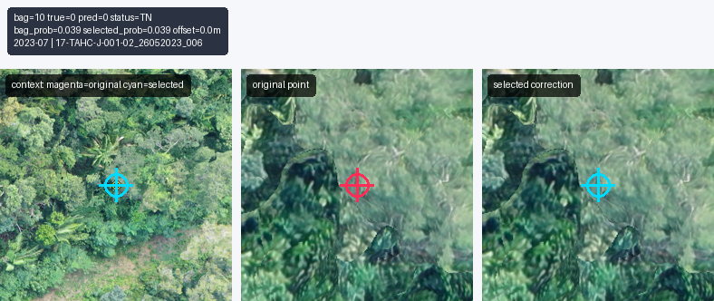
bag 10 | TN | bag 0.039 | inst 0.039 | 0.0m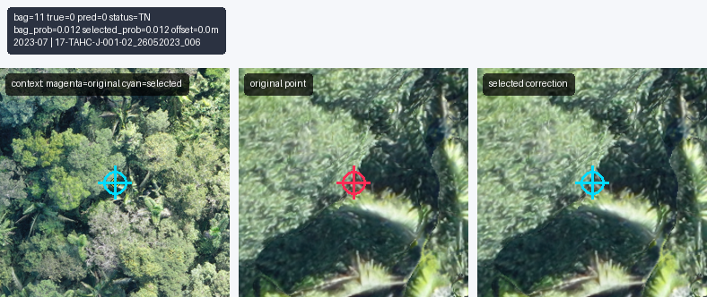
bag 11 | TN | bag 0.012 | inst 0.012 | 0.0m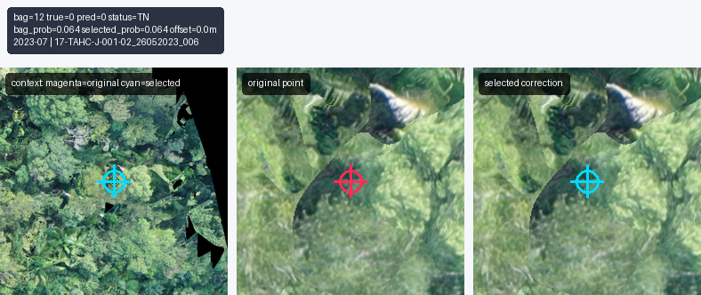
bag 12 | TN | bag 0.064 | inst 0.064 | 0.0m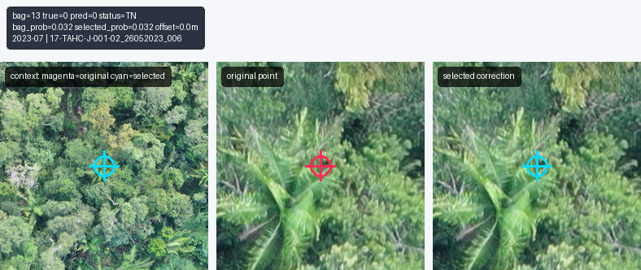
bag 13 | TN | bag 0.032 | inst 0.032 | 0.0m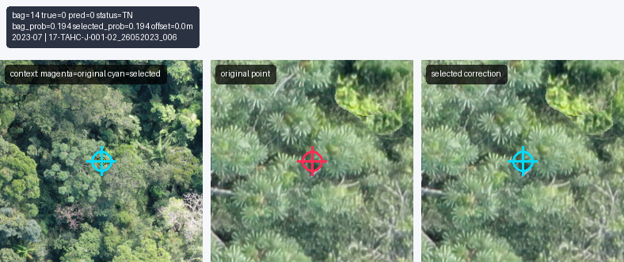
bag 14 | TN | bag 0.194 | inst 0.194 | 0.0m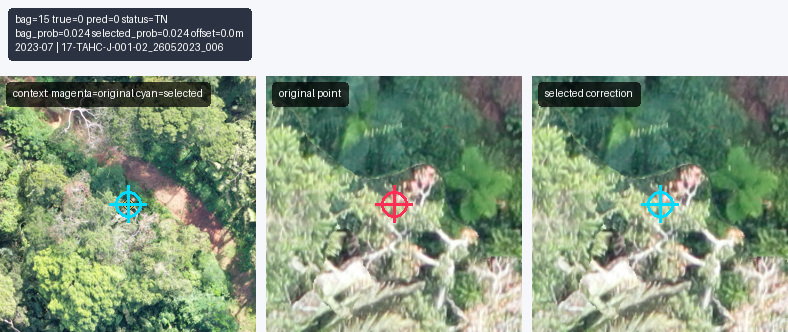
bag 15 | TN | bag 0.024 | inst 0.024 | 0.0m